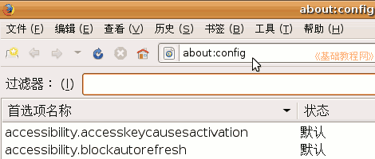
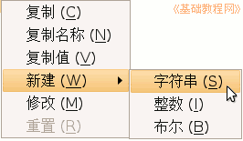
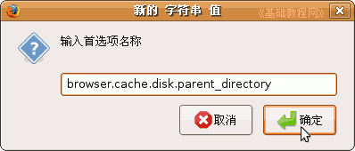
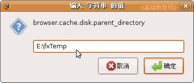
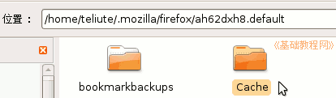
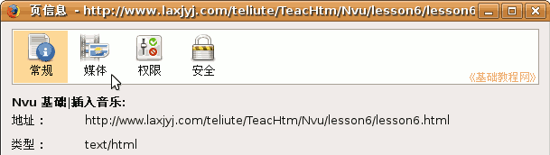
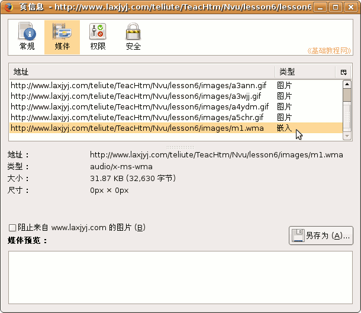
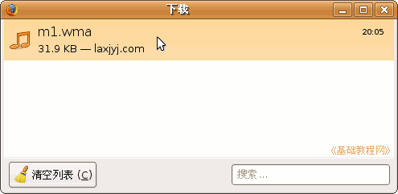
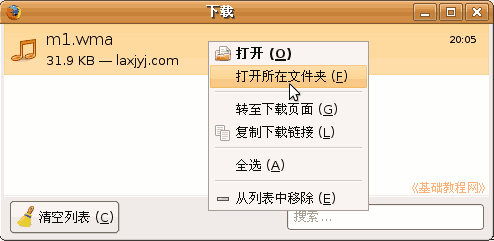

Firefox3 基础教程
作者：TeliuTe 来源：基础教程网
九、更改缓存和保存页面媒体 返回目录 下一课在Firefox中，我们可以将上网产生的临时文件，放在其他磁盘分区中，
另外我们也可以通过“页面信息”面板，来保存网页中的图片、音乐、动画；
1、更改缓存位置
1）先在其他磁盘中新建一个文件夹，用来存放临时文件，例如E:\fxTemp；
启动Firefox，在地址栏中输入 about:config 然后按回车或点“转到”按钮，出来一个提示点“我保证会小心”；

2）在下边的列表空白处点右键，选“新建－字符串”，在出来的对话框里面输入 browser.cache.disk.parent_directory 后点确定；
 
3）然后在出来的对话框中输入新的临时文件的路径，点"确定"即可，注意冒号是英文的；

如果想删除列表里的新建错误项，可以在这个项目上点右键选“重置”命令，重启后即可删除该选项；
4）在 Ubuntu 系统中，临时文件夹在个人文件夹里，点菜单“查看－显示隐藏文件”，找到 .mozilla－firefox－ .default－Cache 文件夹；

一般不用修改，看一下即可；
2、保存页面媒体
1）打开一个有图片/音频/动画的网页，等待载入完成；
2）点菜单“工具－页面信息”，出来一个面板，在上面点“媒体”选项；

3）在“媒体”列表中，找到音乐文件，一般是“对象、嵌入”等，下边会有地址，对照一下最后的文件类型；

4）点右下角的“另存为”按钮，出来一个“保存图片”的对话框，选择保存位置点“保存”即可完成下载；

5）在文件名上敲右键，在出来的菜单里，可以选择打开所在文件夹，从而找到该文件；

本节学习了更改缓存和保存媒体的基本操作，如果你成功地完成了练习，请继续学习下一课内容；本教程由86团学校TeliuTe制作|著作权所有
基础教程网：http://teliute.org
美丽的校园……
转载和引用本站内容，请保留版权信息和本站链接。